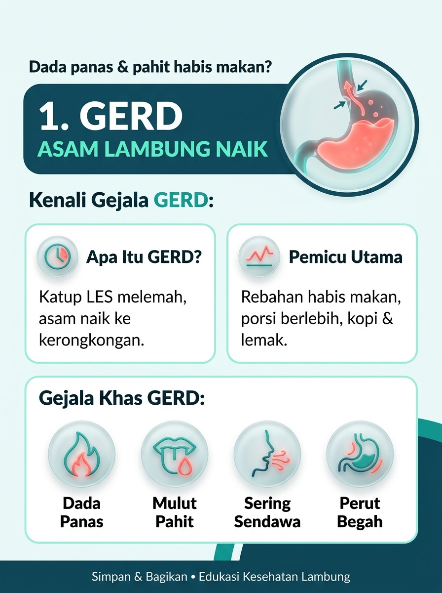

1. GERD: Bukan Sekadar Maag, Ini Masalah Katup Lambung yang Longgar

GERD: Dada terasa panas terbakar seperti mau serangan jantung, padahal baru selesai makan malam?
Banyak yang langsung menyebut semua nyeri perut atas sebagai "maag". Padahal kalau rasa panasnya naik sampai ke dada atau tenggorokan terasa asam dan pahit, besar kemungkinan itu GERD (Gastroesophageal Reflux Disease).
Bedanya ada di pintu masuk lambung yang disebut katup LES (Lower Esophageal Sphincter). Normalnya katup ini mengunci rapat setelah makanan turun. Pada penderita GERD, katup ini melemah atau sering terbuka di waktu yang salah sehingga asam lambung naik membasahi dinding kerongkongan yang tidak punya lapisan pelindung sekuat lambung.
Kebiasaan yang paling sering memicu katup ini kendor:
- 1. Langsung rebahan kurang dari 2-3 jam setelah makan besar.
- 2. Porsi makan terlalu penuh sampai menekan katup ke atas.
- 3. Terlalu sering minum kopi saat perut kosong, makanan tinggi lemak, atau cokelat.
Simpan postingan ini biar kamu bisa bedakan kapan nyeri itu cuma begah biasa dan kapan katup lambungmu sedang butuh istirahat. Menurutmu, gejala GERD mana yang paling bikin panik?
Ingin tahu ikhtiar herbal alami yang aman dan sesuai untuk keluhan kesehatan Anda? Hubungi tim edukasi kami langsung via WhatsApp resmi.
Konsultasi WA: 0852-8674-7289
Artikel Seri Lambung & Edukasi Kesehatan Lainnya
- [Seri Lambung #2] 2. Gastritis: Kenapa Ulu Hati Terasa Perih Seperti Diiris saat Perut Kosong
- [Seri Lambung #3] 3. Tukak Lambung: Saat Radang Biasa Sudah Berubah Jadi Luka Terbuka
- [Seri Lambung #4] 4. Dispepsia Fungsional: Hasil Endoskopi Normal, Tapi Perut Selalu Begah dan Perih
- [Seri Lambung #5] 5. Silent Reflux (LPR): Asam Lambung Naik Tanpa Panas di Dada, Serangnya ke Tenggorokan
- [Seri Lambung #6] 6. Gastroparesis: Saat Otot Lambung Bekerja Melambat dan Makanan Tertahan Berjam-jam
- [Seri Lambung #7] 7. GERD Anxiety: Kenapa Pikiran Stres Bisa Bikin Lambung Bergejolak dan Jantung Berdebar
- [Seri Lambung #8] 8. Hernia Hiatus: Ketika Bagian Atas Lambung Ikut Terdorong Naik Menembus Diafragma
- [Seri Lambung #9] 9. Refluks Empedu: Kenapa Rasa Pahit dan Perihmu Tidak Mempan Obat Asam Lambung Biasa
- [Seri Lambung #10] 10. Red Flags Lambung: 5 Tanda Bahaya yang Tidak Boleh Lagi Ditunda dengan Obat Warung
- [Seri Lambung #11] Kunyit (Kurkumin) untuk Asam Lambung & Gastritis: Cara Kerja & Dosis Aman
- [Seri Lambung #12] Temulawak untuk Pemulihan Mukosa Lambung & Refluks Empedu: Bedanya dengan Kunyit
- [Seri Lambung #13] Pati Garut (Irut) — Pelapis Alami Dinding Lambung Perih & Tukak Lambung
- [Seri Lambung #14] Lidah Buaya (Aloe Vera) untuk Meredakan Dada Panas GERD: Cara Olah Aman
- [Seri Lambung #15] Madu Murni & Habbatussauda untuk Luka Lambung & H. pylori: Cara Konsumsi Benar
- [Seri Lambung #16] Jahe Merah untuk Lambung: Kapan Aman & Kapan Justru Memicu Dada Panas?
- [Seri Lambung #17] Gamat (Teripang Emas) & Kolagen Alami untuk Regenerasi Luka Dinding Lambung
- [Seri Lambung #18] Akar Manis (Licorice / DGL) vs Daun Peppermint untuk GERD: Mitos vs Fakta
- [Seri Lambung #19] Daftar Makanan Aman vs Pantangan Wajib Penderita GERD & Maag Kronis
- [Seri Lambung #20] Posisi Tidur Sunnah untuk Asam Lambung: Hikmah Miring Kanan & 3 Adab Anti-Refluks
- [Seri Lambung #21] Menu Sarapan & Jadwal Makan Ideal untuk Lambung Sensitif (Pola Porsi Kecil Sering)
- [Seri Lambung #22] Aturan Minum Kopi, Teh & Air Hangat bagi Penderita Asam Lambung
- [Seri Lambung #23] Beda Maag Biasa vs GERD vs Tukak Lambung: Tabel Perbandingan Gejala Lengkap
- [Seri Lambung #24] Kenapa Asam Lambung Sering Kambuh Malam Hari & Subuh? 4 Langkah Pencegahannya
- [Seri Lambung #25] FAQ Herbal Lambung: Bolehkah Minum Herbal Bersamaan dengan Obat Dokter (PPI/Antasida)?
- [Seri Diabetes #26] Gejala Awal Diabetes yang Sering Diabaikan: 6 Sinyal Tubuh Sebelum Terlambat
- [Seri Diabetes #27] Resistensi Insulin: Kenapa Gula Darah Tinggi Padahal Sudah Kurangi Gula Pasir?
- [Seri Diabetes #28] Prediabetes: Fase Emas yang Masih Bisa Kembali Normal Sebelum Jadi Diabetes Tipe 2
- [Seri Diabetes #29] Beda Cek Gula Darah Puasa (GDP), 2 Jam PP, Sewaktu & HbA1c: Mana Paling Akurat?